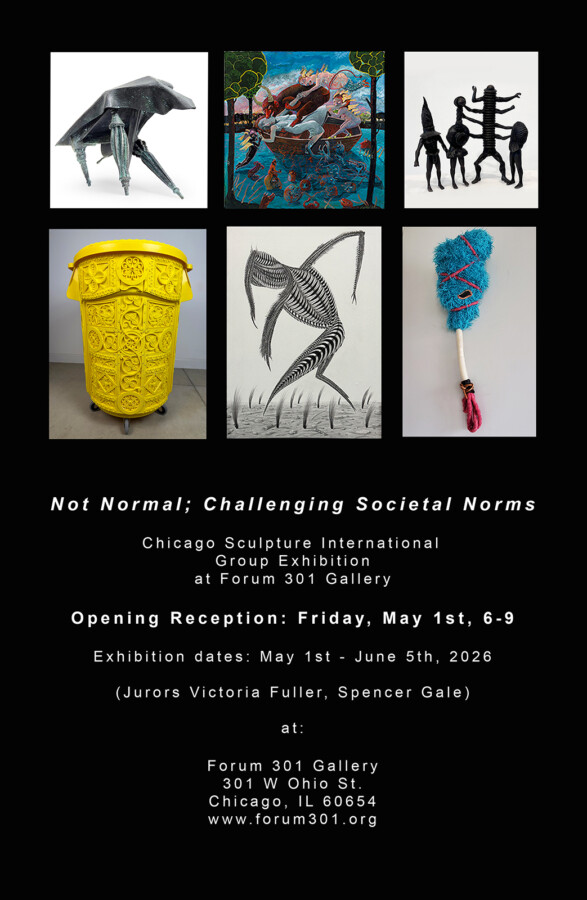

Not Normal; Challenging Societal Norms
Jonathan Antos • Sharon Bladholm • Donna Bliss • Margie Criner • Gary Cudworth • Jason Ferguson • Gertah • Bert Gilbert • Jill King • John Kurman • Erin LaRocque • Gina Lee Robbins • Micki LeMieux • Seanice Lenay • Ellen Lustig • Russ Marr • Bobbi Meier • Jerry Monteith • Scott Mossman • Thomas Plum • Howard Russo • Dominic Sansone • Samuel Schwindt • Marvin Shafer • Eleanor Spiess-Ferris • Simone Scigousky • Rich Stewart • Sishi Wang • Bruce Webber • Connor Young
Not Normal; Challenging Societal Norms
Chicago Sculpture International
Group Exhibition at Forum 301 Gallery
Opening Reception: Friday, May 1st, 6-9
Exhibition dates: May 1st – June 5th, 2026, (Jurors Victoria Fuller, Spencer Gale) at:
Forum 301 Gallery
301 W Ohio St.